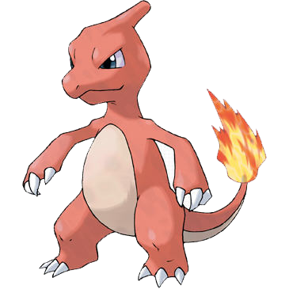
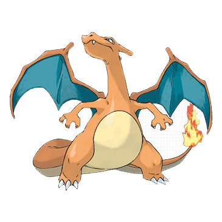
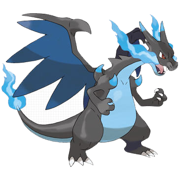

<!DOCTYPE html>
<html>
	<head>
		<meta charset="UTF-8">
        <title>switch 문</title>
         <script type="text/javascript">
             var input = prompt("다음의 숫자를 입력하세요.", "1 또는 2  또는 3");
             
             switch (input) {
            	 case "1": document.write(""); break;
            	 case "2": document.write(''); break;
            	 case "3": document.write(""); break;
            	 default : alert("잘못 입력하였습니다");       
             }
             // break로 인해 분기되는 지점
		

         </script>
    </head>
    
    <body>
    </body>
</html>

